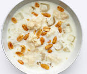

Garri Recipe

Garri is pan fried cassava flakes which is very popular in West Africa. Soaked Garri ‘cereal’ is definitely a must try for anyone visiting West Africa for the first time.
Ingredient:
- garri
- water
- sugar
- groundnut
- milk
- ice
Steps To Take:
- Pour the garri cereal into a bowl
- Pour desired amount of water into the cereal
- Add desired amount of Sugar
- Add desired amount of milk
- Add desired amount of groundnut
- Add 7 pieces of ice just to make the cereal chilly
- And garri is fit for consumption...